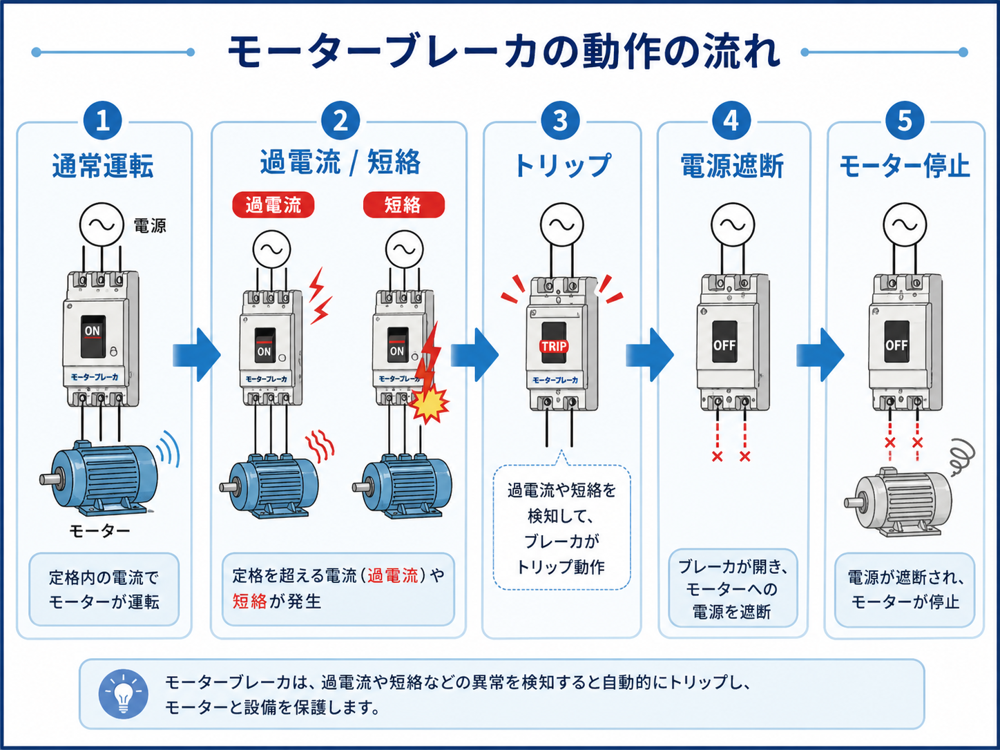
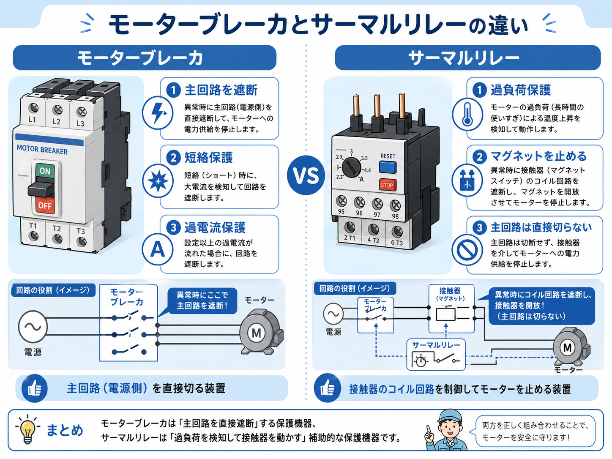

先に結論：モーターブレーカは「主回路を遮断して守る役」
モーターブレーカは、モーターに異常な電流が流れたときに、 主回路側を遮断してモーターや配線を守るための保護機器です。
サーマルリレーもモーター保護に関係しますが、見方は少し違います。 サーマルリレーは過負荷を検知してマグネットスイッチの制御側を止めるイメージ、 モーターブレーカは異常時に主回路を直接遮断するイメージです。

先輩 モーターブレーカは、モーターや配線に異常が起きたときに、電源側を遮断して守る部品だよ。

新人 サーマルリレーみたいにマグネットを止めるというより、ブレーカ自体が回路を切る感じですね。

先輩 そう。だから、短絡や大きな過電流の保護として見ると役割が分かりやすいね。
モーターブレーカとは？
モーターブレーカは、モーターを使う回路でよく出てくる保護機器です。 制御盤の中では、電源側からモーターへ行く主回路上に入り、 異常な電流を検知したときに回路を遮断します。
モーター保護というとサーマルリレーも出てきますが、 モーターブレーカは主回路を遮断するブレーカとしての役割が強く、 短絡や過電流の保護を考えるときに重要になります。

「モーター専用の保護を意識したブレーカ」と見ると分かりやすい
普通のブレーカと似た見た目でも、モーターブレーカはモーター回路で使うことを意識した保護機能や設定が入っています。 制御盤では、モーターを安全に使うための保護役として見ます。
モーターブレーカの基本の動き
モーターブレーカの動きは、ざっくり言うと 通常運転 → 過電流や短絡 → トリップ → 電源遮断 → モーター停止 という流れです。

1. 通常運転
定格内の電流であれば、モーターは通常通り運転します。
2. 過電流・短絡が発生
負荷の異常やショートなどで、設定以上の電流が流れることがあります。
3. ブレーカがトリップ
異常を検知すると、モーターブレーカがトリップ動作します。
4. 電源を遮断して停止
主回路が遮断され、モーターへの電源供給が止まります。
トリップしたら原因確認が先
モーターブレーカが落ちたときは、すぐに入れ直すのではなく、 過負荷、短絡、配線異常、機械側の固着などがないかを先に確認します。
モーターブレーカとサーマルリレーの違い
モーターブレーカとサーマルリレーは、どちらもモーター保護に関係します。 ただし、止め方と役割の見方が違います。

| 部品 | 主な役割 | 現場での見方 |
|---|---|---|
| モーターブレーカ | 過電流や短絡などを検知し、主回路を遮断する | モーターや配線を異常電流から守る電源側の保護機器 |
| サーマルリレー | モーターの過負荷を検知し、マグネットスイッチをOFFにする | 過負荷を見て、制御側を止める保護部品 |
| マグネットスイッチ | モーターへ行く主回路を入切する | PLCや押しボタンの指示で、実際にモーターを動かす役 |
新人 モーターブレーカは主回路を切る。サーマルリレーはマグネットのコイル側を止める。こういう分け方でいいですか？
先輩 その見方でかなり追いやすくなるよ。どちらもモーターを守るけど、どこを切って止めるかが違うんだ。
現場で見るときの注意点
モーターブレーカは、ただON/OFFを見るだけではなく、 容量、設定、トリップ原因、負荷側の状態もセットで見る必要があります。
- モーターブレーカの容量や設定値がモーターに合っているか
- トリップ原因が過負荷なのか、短絡なのか、瞬時的な異常なのか
- 配線のゆるみ、端子の発熱、絶縁不良がないか
- 機械側が固着してモーターに無理がかかっていないか
- 同じトリップが何度も繰り返されていないか
落ちたブレーカを原因確認なしで何度も入れ直さない
モーターブレーカがトリップした場合、どこかに異常がある可能性があります。 原因を確認せずに何度も復帰させると、配線や機器を傷めるおそれがあります。
設定値は「落ちないように上げる」ものではない
過負荷で頻繁に落ちるからといって、原因を見ずに設定だけ上げるのは危険です。 モーター定格、負荷条件、配線状態を確認してから判断します。
まとめ：モーターブレーカは主回路側でモーターを守る保護機器
モーターブレーカは、過電流や短絡などの異常を検知して、主回路を遮断するための保護機器です。 モーターや配線を守る役として、制御盤の中ではとても重要な部品です。
サーマルリレーは過負荷を検知してマグネットを止める役、 モーターブレーカは主回路を直接遮断する役、と分けて考えると整理しやすくなります。